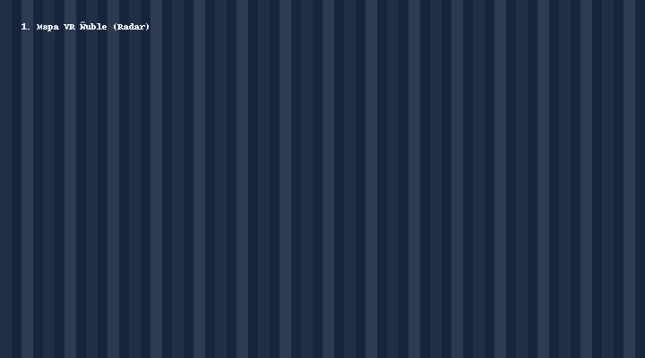
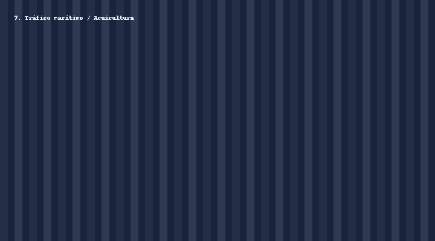
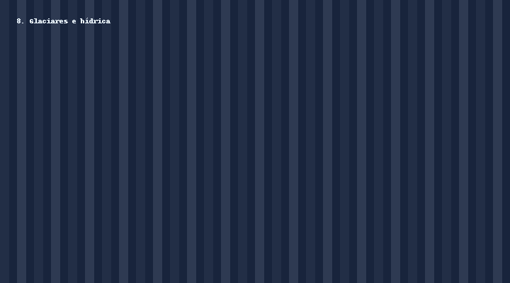
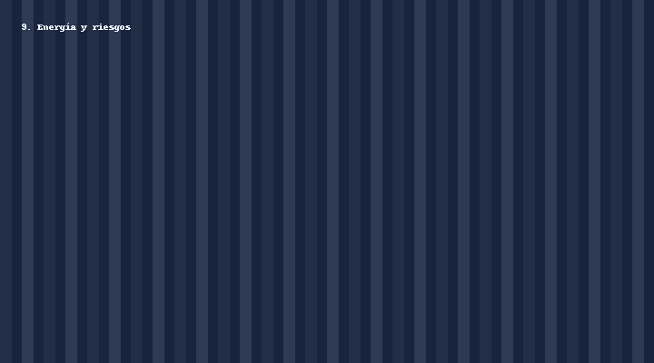
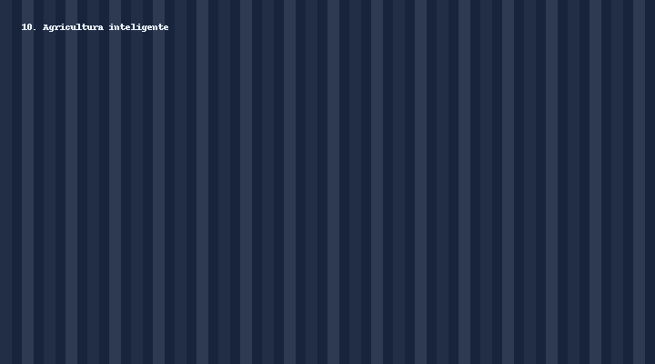

7. Tráfico marítimo / Acuicultura
PIE: AR colaborativa; PAES: detección (CFAR simple).



Cómo usar
- Descarga un .zip y descomprímelo.
- Abre
web/index.html(VR) oweb/ar.html(cuando esté). - Ejecuta los scripts en
/scriptspara generar tus propias capas con Sentinel‑1/DEM.
Nota: Los proyectos son educativos; no reemplazan estudios técnicos.